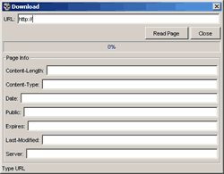
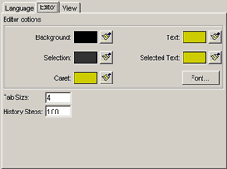
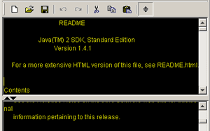

Дополнительные функции Acidpad
Acidpad содержит несколько выгодно отличающих его от Notepad функций, таких как поддержка протокола HTTP (можно скачивать исходные тексты страниц в формате HTML), возможность настрайвать внешний вид и поведение программы до мелочей, мгновенно сменить язык (а также элементарно установить/удалить новый язык); также имеется панель инструментов, делающая работу более комфортной и простой, и возможность разделять одну рабочую область на две, что упрощает работу с длинными документами и позволяет, например, видеть одновременно начало файла и его конец.
Далее приводится описание этих функций.
Поддержка протокола HTTP

Пункт меню Файл (File) > Открыть из Сети (Open from Web). С помощью нехитрого диалогового окна Вы можете скачивать исходный текст, получать информацию о сервере и скачиваемом объекте. Всего лишь введите URL (например: http://www.rambler.ru) в соответствующее поле и нажмите Enter или кнопку "Скачать (Read Page)". Об ошибках, если они возникнут Вы узнаете по сообщению в строке состояния внизу окна. Ждёте окончания процесса, закрываете окно и Ваш исходный код находится в текстовом поле.
Настройка редактора

Пункт меню Настройки (Options) > Настройки (Settings). Здесь, на вкладке "Редактор (Editor)" находится центр управления двумя текстовыми полями и менеджером отмены-повтора. Измените цвета элементов на свой вкус и нажмите "Применить (Apply)" или "ОК (OK)". Изменения станут заметны сразу. Также здесь можно настроить размер табуляции (от 1 до 14 включительно) и размер журнала событий.
Разделитель рабочей области

Разделитель включается и выключается путём нажатия на соответствующую кнопку на панели инструментов или в меню главного окна. Необходимость в этом инструменте можно не объяснять, так как каждый хотя бы раз надолго терял какое-либо место в тексте, отлучившись на некоторое время в другую его часть. При помощи разделителя рабочей области Вы можете просматривать сразу два отрывка документа и переключаться между ними.